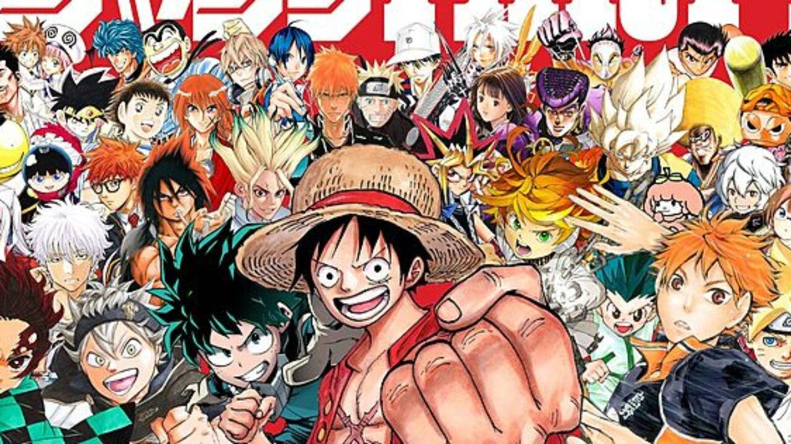
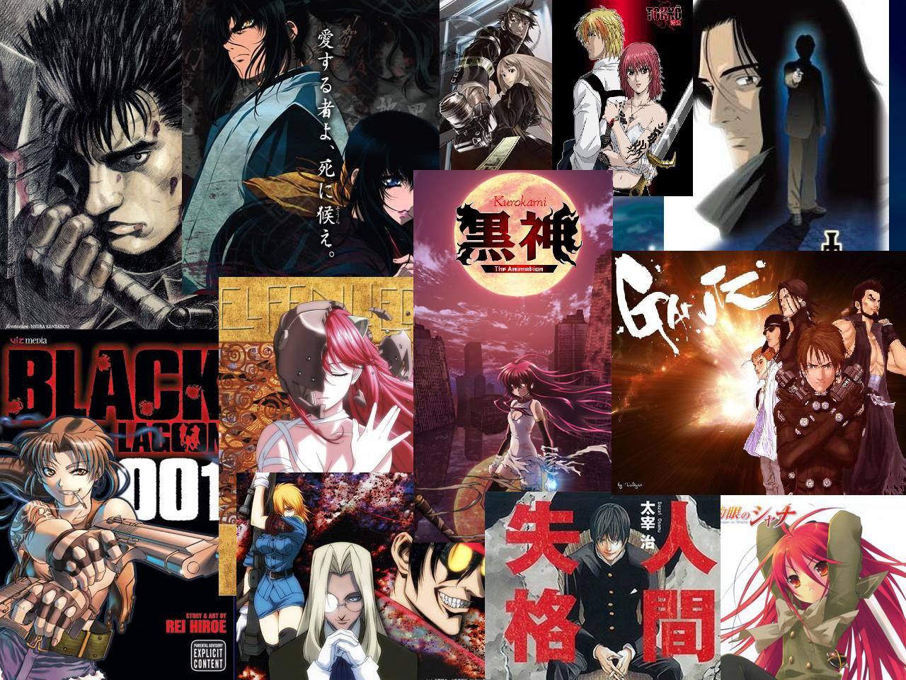
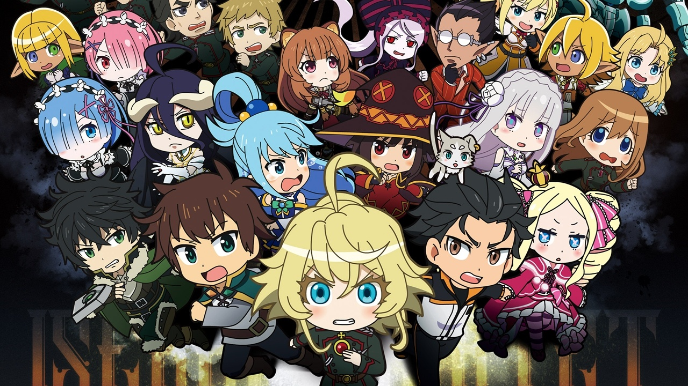
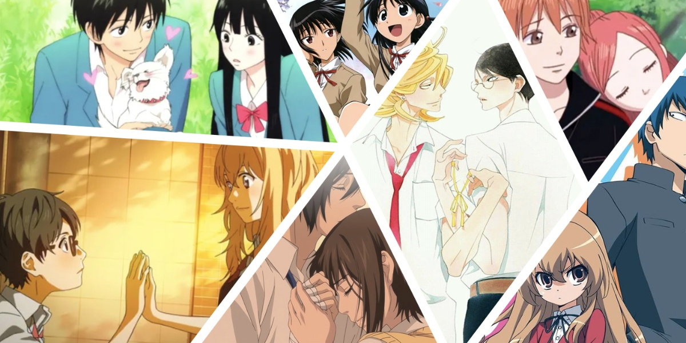

Los mejores géneros de anime y su top 5 de series
En esta seccion se encuentran los nombres de los genero de anime mas geniales/populares y entretenidos en mi parecer, con una breve descripcion que espero te ayude a encontrar tu tematica favorita. Despues puedes dirigirte al link donde encontaras un apartado con mi top 5 de animes de la tematica elegida donde puedes hallar los animes mas emblematicos de esta cultura.
SHONEN
Son series con grandes dosis de acción, en las que a menudo se dan situaciones humorísticas. Destaca el compañerismo entre miembros de un colectivo o de un equipo de combate. Muchos de estos mangas han devenido en anime, que es el nombre que reciben las películas de animación japonesas y los dibujos animados emitidos en televisión. Si deseas saber mi top 10 de este genero de animes da click en la siguiente imagen. 
SEINEN
Algunos temas frecuentes en el seinen son la violencia y la política,y sus tramas van desde lo vanguardista hasta lo erótico. Suele ir dirigido a hombres, pero hay muchísimas mujeres que leen seinen. Los seinen están destinados a hombres y contienen temas complejos que no serían apropiados para las personas más jóvenes.El contenido erótico y las escenas violentas también forman parte de las producciones de seinen. Si deseas saber mi top 10 de este genero de animes da click en la siguiente imagen.
ISEKAI
Esta tematica gira en torno a una persona normal que es transportada y/o atrapada en un universo paralelo. Muchos de sus exponentes incluyen la reencarnación, de esta forma llevando a una persona que llevaba una vida cotidiana y simple a sobrevivir en un mundo completamente diferente, pero también se consideran isekai las series que traen los elementos fantásticos al mundo real y cotidiano. En los últimos años es uno de los géneros más populares. Si deseas saber mi top 10 de este genero de animes da click en la siguiente imagen.
VIDA ESCOLAR
Muchos animes se enfocan en la vida escolar del protagonista. Ya sea en sus actividades extracurriculares o en la cotidianidad de las clases, el enfoque principal es mostrar el día a día en el aula y las amistades que pueden derivar de dichas actividades. En este tipo de generos no se ve mucho progreso o cambio de la tematica, por lo contrario se concentra en mantenerse siempre enfocado en sus problemas o situaciones que se dan en el ambito escolar. Si deseas saber mi top 10 de este genero de animes da click en la siguiente imagen.
GORE
En este género abunda la sangre y la violencia. Una de las variantes interesantes del gore es extrapolarlo con personajes bishoujo, para que la sorpresa sea todavía más inquietante cuando las cosas se salen de control, el punto de este es dar una gran sorpresa al espectador con un derramamiento exagerado de sangre, detalles bizarros y terrorificos. Usualmente, los temas son de intriga, oscuros y sobrenaturales. Si deseas saber mi top 10 de este genero de animes da click en la siguiente imagen.